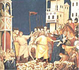
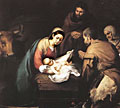
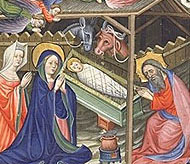

De arvo.net:
¿Cuánto me dan por la estrella y la luna?
¿Cuánto me dan por el Niño y la cuna?
Este es un Niño sin padre ni abuelo,
este es un Niño nevado del cielo.
¿Cuánto me dan, que lo vendo barato,
cuánto me dan, que lo doy sin contrato?
Este es el Niño que mamaba ahora.
Ríe despierto y en durmiendo llora.
Casi de balde la flor del mercado.
¿Cuánto me dan, que lo doy regalado?
Este es el Niño verano en invierno.
Este es el Niño que aniña lo eterno.
¿Cuánto me dan, que lo doy sin subasta?
¿Cuánto me dan por la fruta en canasta?
Este es el Niño que viene a dar guerra,
viene a dar paz por amor de la tierra.
¿Cuánto me dan? Por moneda no quede.
Una lágrima sola que tiemble y que ruede.
Este es el Niño de la rifa loca
que todos le juegan y a todos les toca.
¿Cuánto me dan por la buena fortuna?
¿Cuánto me dan por el Niño y la luna?
Adivinanza : Quién perpetró estas palabras?
-
En esta Navidad vuelvo a pensar que toda persona tiene derecho a la felicidad y que llevamos dentro de nuestro corazón una chispa de fuego, de esperanza que nos orienta hacia esa felicidad. No siempre lo creemos, nos parece que no podemos alcanzarla...
Moria Casán , o alguna otra descerebrada de la televisión ? No.
Algún gurú budista o maestro yoga o similar ? No.
Franklin Roosevelt, o algún procer yanqui con poco sentido del ridículo? No.
Algún activista del individualismo iluminista ateo ? No.
Te das por vencido?
El que dijo eso, la semana pasada, en su mensaje pastoral
de Navidad, fue nuestro arzobispo y cardenal, monseñor
Bergoglio.
Un discurso para los diarios y revistas, como tantos.
La demagogia imbécil y cobarde
de siempre (no vayan a pensar que los católicos
somos 'reaccionarios', eh... para nada; estamos con ustedes,
tenemos la misma onda; miren cómo criticamos al gobierno,
cómo nos preocupamos por los temas sociales...).
Shit!
Hasta no falta la mención de que "Jesús nació
en la pobreza y bajo la opresión del imperio"
(ay! qué lindo, ese coqueteo con los chicos antiimperialistas!).
Esa actitud ante "el mundo", ese miedo
de "aislarse", de "quedar afuera" ... Y es cierto, ese es un peligro,
-el que nombraba Lewis en el post de hace poco; el de meterse
en catacumbas por miedo a "perder la pureza de la iglesia"
(miedo típico de integristas, cristianos orientales, lefebristas, y etc),
el de negarse a hablar con el mundo, de entender la lengua
y los signos de los tiempos.
Pero cualquiera puede ver que no se trata de eso.
Justamente, el mismo Lewis: él hablaba en un lenguaje
perfectamente moderno -demasiado a veces, para mi gusto-;
pero como tenía cosas que decir a ese mundo moderno,
era escuchado con gusto por cristianos y por ateos.
El mismo Papa. El Papa es , en primer lugar querido y admirado
por "sus ovejas"; y en segundo lugar, respetado, admirado
-y también odiado- por los de afuera;
por gente sencilla y también por gente con
formación intelectual y estética.
Ese es el signo, ese es el fruto que revela el árbol.
¿Puede decirse algo parecido de la mayoría de los obispos
argentinos ? Yo creo que no. Yo creo que todos
esos discursos políticos episcopales no mueven un pelo a nadie,
ni católicos ni ateos; y me parece que, en unos y otros,
sobre todo si tienen algo de formación intelectual y estética,
no provocan más que desprecio.
Esa pequeñez, ese apuntar hacia abajo, hacia la masa, ese horror ante la grandeza es visible en la liturgia, por otra parte (traducciones, textos de la misa, 'oración por la patria', alergia a lo 'sacro'); el odio a la belleza es uno de los primeros grados del fariseísmo, si no me equivoco.
Hace poco, vía
Amy leía esto: Priests Seek Role in Bishop Pick. Piden que los curas (presbíteros, mejor dicho)
y los laicos participen de alguna manera en la elección de los obispos.
No es cosa nueva, ciertamente. Y es uno de los reclamos
que suele formar parte del paquete standard de los católicos
progresistas, que promueven reformas que tiendan a la
"mayor participación del laico", "pluralismo democrático",
"apertura al mundo", (y la cosa sigue con
curas casados, sacerdocio femenino, visto bueno a los anticonceptivos, etc).
Por ejemplo.
Hablando en general (y más bien epidérmicamente) , todas esas cosas
no me simpatizan mucho que digamos. Más bien al contrario.
Y , concretamente, el reclamo por una iglesia "democrática" no
me atrae en lo más mínimo.
Pero, dejando antipatías epidérmicas de lado,
no estoy seguro de que no haga falta algo de eso.
El mismo Castellani (nada "progresista") reclamaba
lo mismo, harto de ver cómo el Vaticano se limitaba
a nombrar obispos mediocres, inofensivos... funcionales....
ineptos.
De paso, vaya esto de Lewis, sobre ese inaudito "derecho a la felicidad". Y esto.
-
LA MATANZA DE LOS INOCENTES
Según Ana Catalina Emmerich
 ... Cuando Jesús tenía alrededor de un año y medio de edad, se le apareció un ángel a la Santísima Virgen, en Heliópolis y le hizo saber de la matanza de los niños por Herodes. José y Ella se afligieron mucho, y el Niño Jesús lloró durante todo el día. He aquí lo que yo vi en aquella ocasión.
{kind=link}
No habiendo vuelto a Jerusalén los tres Reyes, los temores de Herodes, que en aquel momento estaba resolviendo varios asuntos de familia, se calmaron un poco; pero recrudecieron nuevamente cuando, después del retorno de la Sagrada Familia a Nazaret, llegaron hasta él mil rumores relacionados con las predicciones hechas por Simeón y por Ana durante la presentación de Jesús en el Templo. Con diversos pretextos, mandó soldados a diferentes lugares de los alrededores de Jerusalén, a Gilgal, a Belén, y hasta a Hebrón, e hizo hacer un censo de los niños. Los soldados ocuparon aquellos sitios durante nueve meses. Herodes, mientras tanto, se hallaba en Roma, y sólo después de su vuelta, fueron degollados los niños. Juan tenía en aquella época dos años, y había estado escondido en casa de sus padres desde algún tiempo antes de que Herodes hubiera dado a las madres la orden de presentar ante las autoridades a sus hijos de edad de dos años o menos. Santa Isabel, advertida por un ángel, huyó nuevamente al desierto con el pequeño San Juan. Jesús tenía en aquel momento cerca de un año y medio y ya podía correr.
Los niños fueron degollados en siete lugares diferentes. Se había prometido a las madres buenas recompensas a su fecundidad, y ellas llevaron sus hijitos a las casas donde estaban las autoridades, vestidos con sus más lindos trajes. Los hombres fueron despedidos, y las madres separadas de los niños, que fueron degollados por los soldados en patios cerrados, amontonados y enterrados en fosos.
Hoy al mediodía, vi a las madres con sus niños de dos años, y de menos, venir a Jerusalén, de Hebrón, de Belén, y de otro lugar donde Herodes había enviado a sus soldados y dado órdenes a sus funcionarios.
Se dirigían a la ciudad en diferentes grupos, y varias llevaban a dos niños, e iban montando asnos. Todas fueron conducidas a un gran edificio, y los hombres que las acompañaban fueron despedidos. Ellas entraron alegremente, pues creían que. iban a recibir gratificaciones por su fecundidad.
El edificio estaba un poco aislado y bastante cerca del que fué más tarde la casa de Pilatos. Se hallaba rodeado de muros, de manera que desde afuera no se podía saber fácilmente lo que sucedía en el interior. Aquello debía de ser como un tribunal, pues en el patio vi unos pilares y unos bloques de piedra con cadenas colgando; había allí también unos árboles, que se encorvaban y ligaban juntos, mientras se ataba en ellos a los hombres. Al soltarlos luego, se enderezaban rápidamente, deshaciendo a aquellos desgraciados. Era un edificio macizo y sombrío. El patio era casi tan grande como el cementerio que hay a un lado de la iglesia principal de Dulmen. Una puerta que se abría entre dos muros, llevaba a ese patio, rodeado de construcciones por tres lados. Los edificios de la derecha y de la izquierda tenían un piso solamente; el del centro parecía una antigua sinagoga abandonada. Esas construcciones tenían puertas que daban sobre el patio.
Las madres fueron llevadas, a través del patio, a los dos edificios laterales, y allí se las encerró. Me hicieron el efecto de hallarse en una especie de hospital, o de posada. Cuando se vieron privadas de libertad, tuvieron miedo y empezaron a llorar y a lamentarse. Pasaron así toda la noche.
Hoy después de mediodía vi un cuadro horroroso. En la casa de justicia asistí a la matanza de los inocentes. El gran edificio posterior que cerraba el patio tenía dos pisos. El inferior estaba formado por una sala grande y desnuda, parecida a una prisión o a un gran cuerpo de guardia; encima, había una pieza cuyas ventanas daban sobre el patio. Vi allí a varios personajes reunidos como en un tribunal; delante de ellos tenían unos rollos colocados sobre una mesa. Creo que Herodes estaba presente, pues vi a un hombre con manto rojo, adornado de piel blanca ; esta piel tenía unas pequeñas colas negras. Lo vi, rodeado por los demás, mirando por la ventana de la sala.
Las madres, con sus niños, eran llamadas una a una, para ser conducidas de los edificios laterales a la sala inferior grande del cuerpo de edificio que estaba detrás. A la entrada, los soldados les quitaban sus niños y los llevaban al patio, donde una veintena de ellos los mataban, atravesándoles la garganta y el corazón con espadas y picas. Había allí niños fajados, a quienes sus madres aun amamantaban, y otros un poco mayores ya con vestiditos. No los desnudaban; los degollaban, y tomándolos de un bracito o por el pie, los arrojaban al montón. Era un espectáculo horrible.
Las madres fueron amontonadas en la sala grande; y cuando vieron lo que hacían con sus niños, lanzaron gritos desgarradores, arrancándose los cabellos y echándose unas en brazos de otras. Al final estaban tan apretadas, que apenas podían moverse. Creo que la matanza duró hasta la noche.
Los niños fueron echados más tarde, todos juntos, en una fosa abierta en el patio. Me fué mostrado el número, pero ya no me acuerdo bien. Creo que había setecientos, más una cifra en la que se hallaba un siete o diez y siete.
Ante esta visión quedé aterrorizada; no sabía donde tenía lugar esto; creía que era aquí. Sólo cuando desperté me repuse poco a poco. A la noche siguiente vi a las madres sujetadas con ligaduras y llevadas a sus casas por los soldados. El lugar de la matanza de los niños en Jerusalén fué en el antiguo patio de las ejecuciones, situado a poca distancia del tribunal de Pilatos ; pero en la época de éste sufrió varios cambios. En momentos de la muerte de Jesús vi abrirse la fosa donde habían sido echados los niños degollados; sus almas aparecieron, y salieron de allí.
De arvo.net (que contiene mucho material interesante, aunque mezclado con material menos bueno, y una organización no del todo satisfactoria):
una conferencia de C. S. Lewis; un laico, linguista, converso, anglicano, dando lecciones de "apologética" a sacerdotes y apologistas anglicanos... humm... Bueno, Lewis me gusta sí; aunque a veces ... no sé, no estoy seguro... Este discurso-ensayo, con su tono demasiado didáctico, no me llena; y buena parte de él me inspira cierto rechazo (la primera mitad, sobre todo).
Sin embargo, es Lewis; no deja de ser recomendable, y de tener algunas cosas felices. Cosas como:
-
...la mayoría de los sermones con contenido político no enseñan a los fieles nada distinto de lo que se puede leer en los periódicos recibidos en la casa del párroco.
El mayor riesgo de este momento es determinar si la Iglesia debería seguir practicando una técnica meramente misionera en una situación que se ha convertido en misionera. Hace un siglo nuestra tarea era formar en la virtud a quienes habían sido educados en la fe. En este momento nuestra tarea consiste principalmente en convertir e instruir a los que no creen. Gran Bretaña es tan tierra de misión como China. Si ustedes fueran enviados con los bantús, deberían aprender su lengua y sus tradiciones. Pues también necesitan una enseñanza parecida sobre la lengua y hábitos intelectuales de sus compatriotas incultos y no creyentes. Muchos sacerdotes ignoran por completo esta cuestión
...hoy el sentido del pecado falta casi completamente. En este aspecto, nuestra situación es muy diferente de la de los Apóstoles. Los paganos a los que predicaban se sentían perseguidos por un sentido de culpa, y, por tanto, el Evangelio era para ellos «la buena nueva».
Nosotros nos dirigimos a personas a las que se les ha enseñado a creer que todo lo que va mal en el mundo es por culpa de otros: los capitalistas, el gobierno, los nazis, los generales. Incluso al mismo Dios se dirigen también como jueces. Quieren saber, no si pueden ser absueltos de sus pecados, sino si Él puede ser absuelto de haber creado un mundo así.
...
Podemos, salva reverentia dividir las religiones, como las sopas, en «espesas» y «claras». Por «espesas» entiendo aquellas que tienen orgías y éxtasis y misterios y ataduras locales. África está llena de religiones espesas. Por «claras» entiendo aquellas que son filosóficas, éticas y universales. El estoicismo, el budismo, y la Iglesia Ética son religiones claras.
Ahora bien, si hay una religión verdadera, debe ser a la vez espesa y clara, pues el verdadero Dios debe haber hecho al niño y al hombre, al salvaje y al ciudadano, la cabeza y el vientre. Y las únicas dos religiones que cumplen esta condición son el hinduismo y el cristianismo. Pero el hinduismo la cumple imperfectamente. La religión clara del ermitaño brahman en la jungla y la religión espesa del templo vecino siguen caminos paralelos. El ermitaño brahman no presta atención a la prostitución del templo, ni los devotos del templo a la metafísica del ermitaño. El cristianismo derriba el muro de la separación. Toma a un convertido de África central y le dice que obedezca una ética universal ilustrada. Toma a un pedante académico del siglo xx, como yo, y le dice que vaya rápidamente al misterio, a beber la sangre del Señor. El salvaje tiene que estar claro, yo tengo que estar espeso. Así es como sabemos que hemos llegado a la religión verdadera.
...
Dos de Dolina, un poco a propósito del post ante-anterior, sobre relatividades-relativismos y sobre erudiciones mentirosas.
De una entrevista:
-
En el medioevo se había creado una máquina, en realidad no era una máquina, sino un método combinatorio entre algunas palabras, y se decía que utilizándola las discusiones filosóficas iban a ser como las discusiones entre dos contadores, es decir, podríamos estar en desacuerdo pero bastaba con sacar la cuenta para saber quién estaba en lo cierto.
En verdad en la filosofía no sucede eso y en el arte tampoco, no es tan sencillo establecer quién está en lo cierto y quién equivocado. Lo que no quiere decir, de ningún modo, que sea imposible, que es lo que dicen algunos; "sobre gustos no hay nada escrito", por ejemplo, me parece un gigantesco error. Pero hay cuestiones arduas.
Alguien se aparta de las reglas y hay que apartarse uno también de las reglas, empezar a transitar terrenos inexplorados para saber si estamos ante la presencia de un gran artista o ante la presencia de un loco o de un farsante
Y este elogio de la ignorancia(viejo escrito, revista Humor año 1979):
-
... no hay cosa más peligrosa que un pajarón instruído.
En ciertas épocas de la historia los secretos de la ciencia estaban rodeados de toda clase de precauciones. Los eruditos cultivaban el misterio, pues temían que los conocimientos cayeran en manos de los malvados. Hoy tal reserva es impensable.
Y el auge colosal de los medios de comunicación ha permitido que los impíos aprendan impunemente la germinación del poroto. Canallas y pelandrunes manejan a su antojo asuntos de tan delicada naturaleza como la electrólisis del agua o el soneto. ...
...la segunda calamidad es que a los consumidores de tantos disparates
facilongos la soberbia les llega antes que la sabiduría.
Y entonces nos encontramos -de golpe- con millones de personas que creen que saben y que en realidad no saben nada.
Son los idiotas ilustrados. Ya alguna vez hablamos de ellos. Son gente que
opina sobre todas las cosas del universo sin conocer cabalmente siquiera una.
Esta legión nefasta ha contribuido enormemente a la difusión del facilismo,
postura mental que reduce toda custión a los estrechos límites de un cuadro
sinóptico, o de una definición indigente. Y así han obtenido estruendoso éxito
las idioteces de las cuales conversamos hace pocos meses en esta misma revista: "El karate es una filosofía de vida", "lo que tiene esta ciudad es que te
aliena" y otras sandeces del mismo jaez.
Los idiotas ilustrados tienen también su propio lenguaje. Un lenguaje que poco a poco empieza a conquistarnos a todos, pues habrá de saberse que esta morralla tiene una habilidad especial para imponer sus usos y costumbres.
...no es el uso ridículo del idioma lo más alarmante.
Hay cosas que indignan todavía más.
La pedantería que obliga a avergonzarse a quien no sabe cual es la capital
de Albania o el nombre del presidente de Francia. Los sabelotodos que copan los
asados con teorías recién aprendidas.
La veneración por aparatos tan estúpidos como la licuadora.
El desprecio por las gentes sencillas y la burla a sus costumbres apacibles.
Ya lo dijo Sábato el otro día. La verdadera sabiduría es más fácil de
encontrar en la gente humilde que entre esta caterva que se ha indigestado con
bocadillos de cultura.
(en inglés) Un artículo en Slashdot sobre la carrera y las posibilidades del ingeniero (en el 'primer mundo', claro está); por acá, se usa la frase "la vida del futbolista es corta...", y por allá algo parecido se debate en relación al ingeniero (sobre todo en áreas relacionadas con la computación). "Pasé siete años estudiando, para una carrera de seis años de vida", dice uno...
Más allá de la discusión en el foro
(intensa, y leída muy a vuelo de pájaro), me llamó la atención
este
mensaje sobre la cuestión etimológica: se discutía
si la palabra "engineer" (ingeniero) viene de "engine" (motor)
o de "genius" (genio)....
Entre nosotros, la cuestión no se plantea demasiado
(la relación "ingeniero" - "ingenio" es demasiado trillada),
así que me intrigó esa otra posible etimología... no me hace
mucha gracia -soy ingeniero- pasar a ser un "motorista"
(o motoquero !)... después trataré de sacar algo más
en limpio.
Cambalache de links, un poco especializados:
Le Monde Diplomatique es un icono del progresismo de izquierda, de raíz intelectual y europea (francesa, sobre todo). Y, como es de esperar de nuestro país, es muy leído -en la edición en español- por acá... entre los mismos que se indignan contra el imperialismo, el colonialismo, etc. Tienen una honestidad y una fineza intelectual comparable a los de página 12. Están editando también una especie de libritos o cuadernos didácticos para que aprendamos quiénes son los buenos (Saramago: "Soy un comunista hormonal" ; Chávez : "La revolución bolivariana") y quiénes los malos (el -brrr- Opus... ).
Cada vez que un partido "de izquierda" (lo pongo entre comillas para que no se crea que con esto entiendo algo mucho más concreto que la bandera enarbolada...) gana una elección, dicen que eso "demuestra el fracaso del neoliberalismo". Del éxito o fracaso del socialismo, jamás dirán nada.
Y así. Nada nuevo bajo el sol.
Pero lo que me encantó es esta entrevista que le hizo La Nación al director, Ignacio Ramonet. Y de todos los párrafos, muy cómicos (su uso de las expresiones "verdad" y "el hombre común" es sublime), me mató éste:
-
-(periodista)¿Y entonces cómo llega a la verdad?
-(ramonet) Para explicar la relatividad, Einstein daba el ejemplo de los trenes. Si usted está en un tren detenido en una estación, al lado de otro, cuando uno de ellos avanza usted no puede saber si está en el tren detenido o en el que circula. ¿Por qué? Porque no tiene ningún punto fijo que le sirva de referencia. Sin eso, estamos perdidos. Un buen periódico es aquel que sirve de punto fijo a los ciudadanos.
Y este tipo es un intelectual, estudió con Barthes, doctor en semiología, etc.
Dejando de lado la asombrosa aplicación del ejemplo (la verdad es "un punto fijo" ? ahá ... pero es un punto fijo "convencional" o "real" ? ... en verdad, un periódico estultamente sectario como el que dirige puede ser llamado un "punto fijo"... pero me recuerda más bien la fijeza de un calabozo, o de un ataud),...dejando de lado eso... no tiene este intelectual ningún intelectual amigo que lo desasne un poco ? es de creer que esa imagen ya la ha usado en cuarenta entrevistas y cien conferencias ... nadie le avisó que esa relatividad no tiene nada que ver con la relatividad de Einstein ? (en todo caso, esa es la "relatividad de Galileo").
Estos intelectuales que quieren codearse con los capos ... Me recuerda esto:
En los tiempos en que mi hermana estudiaba
Diseño Gráfico en la UBA, me puse a hojear un
libro que le había dado en la materia "Estética"; autora:
una esteta argentina (profesora titular de la materia).
No insisto sobre la elegancia de editar
un libro y luego conseguir una cátedra en la UBA
para darlo como texto; ni sobre el estilo ridículo,
la afectación y la megalomanía ....
Lo que quiero evocar es una página donde la autora
-siempre posando de intelectual- citaba a Kant;
contaba el famoso símil de la paloma,
que "acaso, sintiendo la resistencia del aire contra
sus alas, piense que en la Luna, sin aire, volaría
con mayor facilidad".... Kant ilustraba con esto
algún aspecto de la razón (o de sus categorías,
o de no sé qué): lo que nos parece "resistencia",
como impedimento y dificultad, en realidad a veces
es el punto de apoyo, el sustento...
La profesora ésta, no había entendido el asunto
(leído seguramente de segunda mano): hablaba
de la paloma kantiana, que "piensa que sin aire
podría volar mejor" ... pero ... "podrá respirar?".
PS:
{kind=link}
-
(continuación)
...
Vi en muchos sitios, hasta en los países más lejanos, una alegría insólita
y un movimiento extraordinario durante toda esta noche. Vi los corazones de
muchos hombres de bien animados por un deseo jubiloso, y los corazones de
los hombres malos, llenos de angustia y de turbación. Vi a muchos animales
manifestar su regocijo con sus movimientos alegres. Vi a las flores
levantar sus corolas, a las plantas y a los árboles adquirir como una nueva
vida y esparcir a lo lejos sus perfumes, y brotar manantiales de la tierra.
En el valle de los pastores, más o menos a una legua y media de la gruta
del Pesebre, se alzaba una colina donde empezaban los viñedos, que se
extendían desde allí hasta Gaza. Contra esta colina estaban las chozas de
tres pastores, jefes de las familias de ese gremio que vivían en las
inmediaciones. A una doble distancia de la gruta del Pesebre se encontraba
lo que llamaban "La torre de los Pastores". Era un gran andamiaje
piramidal, de madera, que tenía por base grandes bloques de roca, colocado
en medio de árboles verdes, y se alzaba sobre una colina aislada en el
centro de la llanura. Estaba rodeado de escaleras, de galerías con unas
torrecillas cubiertas, y todo estaba como tapizado de esteras. Tenía algún
parecido con aquellas torres de madera desde las cuales se observaban los
astros en el país de los tres Reyes Magos, y desde lejos todo esto daba la
impresión de un gran barco con muchos mástiles y velas. Desde esta torre se
gozaba de una extensa vista de todo el país circundante. Podía verse
Jerusalén, y hasta la montaña de la Tentación en el desierto de Jericó.
Las familias de los pastores habitaban en los alrededores en un radio de
más de dos leguas; ocupaban algunas granjas aisladas, rodeadas de jardines
y de praderas; cerca de la torre se hallaba el lugar donde se reunían y
allí estaban los guardianes encargados de velar sobre el mobiliario común.
A lo largo de la colina en la que se alzaba la torre, se hallaban las
cabañas, y apartado de éstas, un gran cobertizo de varios compartimientos,
donde las mujeres de los guardianes habitaban y preparaban los alimentos.
Esta noche vi los rebaños cerca de la torre; una parte estaba en el campo;
la otra bajo un cobertizo cerca de la colina de los tres pastores.
Cuando nació Jesús, vi a los tres pastores impresionados por el aspecto
insólito de aquella noche maravillosa, quedarse delante de sus cabañas
mirando a su alrededor y divisando con asombro una luz extraordinaria
encima de la gruta del Pesebre. Vi también agitarse a los pastores que
estaban cerca de la torre, los cuales subieron al andamiaje y observaron
hacia el lado de esa gruta.
Estando los tres pastores con los ojos alzados al cielo, vi una nube
luminosa bajar sobre ellos. Mientras se les acercaba, noté un movimiento en
su interior. Vi dibujarse unas formas y unas caras, y oí cantos armoniosos
de regocijada expresión que se hacían cada vez más claros. Se asustaron los
pastores al principio, pero un ángel apareció ante ellos y les dijo:
Los pastores de la torre tuvieron la misma aparición, pero un poco más,
tarde. Los ángeles se aparecieron también ante un tercer grupo de pastores,
cerca de una fuente situada a tres leguas de Belén, al Este de la torre.
ADORACIÓN DE LOS PASTORES
A la caída de la tarde, los tres jefes de los pastores vinieron de la
colina a la gruta del Pesebre con los presentes que habían preparado.
Éstos consistían en unos animalitos bastante parecidos a los corzos. Si
eran cabritos, serían muy distintos de los de nuestro país. Tenían largos
cuellos, hermosos ojos muy brillantes, eran muy graciosos y muy rápidos en
la carrera. Los pastores los llevaban atados con cuerdas finas. Llevaban
también sobre sus hombros unos pájaros que habían matado, y bajo el brazo,
otros vivos de mayor tamaño.
Llamaron tímidamente a la puerta de la gruta del Pesebre, y José vino a
su encuentro. Ellos le repitieron lo que, los ángeles les habían anunciado,
y le dijeron que venían a rendir homenaje al niño de la Promesa y a
presentarles sus pobres ofrendas. José aceptó sus presentes con humilde
gratitud y los llevó junto a la Santísima Virgen, la cual se hallaba
sentada cerca del Pesebre, y tenía al Niño Jesús sobre las rodillas.

Anoche varios pastores, con sus mujeres y hasta con sus niños,
vinieron de la torre de los pastores, que se halla a cuatro leguas del
Pesebre. Traían pájaros, huevos, miel, madejas de hilo de diversos colores,
pequeños atados que parecían de seda cruda y ramos de una planta semejante
al junco y que tiene grandes hojas. Esta planta tenía unas espigas llenas
de gruesas semillas. Cuando hubieron entregado sus presentes a José,
se acercáron humildemente al Pesebre, al lado del cual se hallaba sentada la
Santísima Virgen. Saludaron a la Madre y al Niño y luego de haberse
arrodillado, cantaron muy hermosos salmos, el Gloria in excelsis, y algunos
cánticos muy cortos.
Yo canté junto con ellos. Cantaron a varias voces, y
yo hice una vez la voz alta. Recuerdo más o menos las palabras siguientes:
Hoy vi a los tres pastores que ayudaban, uno después de otro, a San José a
disponer todo con más comodidad en la gruta del Pesebre y en las cavernas
laterales. También vi cerca de la Santísima Virgen a varias mujeres
piadosas que le prestaban diversos servicios. Eran mujeres esenias que
habitaban a poca distancia de la gruta del Pesebre, en una garganta situada
al Oriente de la colina.
Hoy vi a la Santísima Virgen con el Niño Jesús y la criada,
abandonando la gruta del Pesebre durante algunas horas . María se
escondió en la gruta late ral, donde había brotado una fuente luego del
nacimiento de Jesucristo. Se quedó más o menos cuatro horas en esa gruta,
en la cual más adelante habría de pasar dos días. José la había estado
arreglando desde el alba, para que pudiera quedarse allí sin demasiada
incomodidad.
Por la mañana, el dueño de la última posada en que la Sagrada Familia había
pasado la noche, envió a la gruta del Pesebre a un criado con varios
presentes. Él mismo vino durante el día para rendir homenaje al Niño. La
aparición del ángel a los pastores en el momento del nacimiento de Jesús ha
sido causa de que todas las buenas gentes de los valles hayan oído hablar
del maravilloso niño de la Promesa; todos ellos vienen ahora para honrarlo.
Hoy varios pastores y otras buenas personas vinieron a la gruta del
Pesebre, y honraron al Niño Jesús con mucha emoción. Llevaban sus trajes de
fiesta e iban a Belén para el Sábado. Entre esas gentes, vi a la mujer que
el 20 de Noviembre había enmendado la grosería de su marido para con la
Sagrada Familia, ofreciéndole hospitalidad. Ella hubiera podido ir para la
fiesta del Sábado a Jerusalén, que estaba cerca de su casa ; pero dio un
rodeo hasta Belén, para ver al Santo Niño y a sus padres. Se sintió muy
feliz por haberles ofrecido esta prueba de afecto.
También vi, por la tarde, a un pariente de San José, al lado de cuya casa
la Sagrada Familia había pasado la noche del 22 de Noviembre, y que ahora
venía al Pesebre para saludar al Niño. Este era el padre de Jonadab, el
cual, en la hora de la crucifixión, llevo a Jesús un lienzo para que se
cubriera con él. Supo que José había pasado cerca de su casa, y había oído
hablar de los milagros que marcaron el nacimiento del Niño, y como tenía
que ir a Belén para el Sábado, fue hasta la gruta trayendo algunos
presentes.
ANUNCIO A LOS PASTORES
Así, en el momento mismo en que nacía el Salvador, una fuente abundante
brotó en la gruta que estaba en la colina al Norte de la del Pesebre. Al
día siguiente la vio José y le preparo un desagüe.
Sobre Belén, el cielo
había tomado un color rojo oscuro, mientras que sobre la gruta del Pesebre,
el valle vecino de la gruta de Maraha, y el valle de los pastores, se veía
un vapor brillante.
Los pastores tenían allí vigías para cuidar la marcha de los rebaños y
avisarles, con sus cuernos de caza, de una posible invasión de ladrones o
de gente de guerra, pues podía vérseles venir desde muy lejos.
- "Nada temáis, pues vengo a anunciaros una gran alegría para todo el pueblo de
Israel. Que os ha nacido hoy en la ciudad de David un Salvador que es
Cristo el Señor. Y esto os será por señal: hallaréis al Niño envuelto en
pañales, echado en un pesebre".
Mientras el ángel anunciaba esto, el
esplendor se hizo cada vez más intenso a su alrededor, y pude ver allí a
cinco o siete grandes figuras de ángeles, bellas y luminosas. Tenían en sus
manos como una larga banderola donde estaba escrito algo en letras
del tamaño de un palmo, y pude oírlos alabando a Dios y cantando :
"Gloria a Dios en las alturas del cielo y paz sobre la tierra para los hombres de
buena voluntad".
No pude ver a los pastores ir inmediatamente a la gruta del Pesebre, de la que
unos se hallaban a legua y media de distancia y los otros a tres leguas;
pero los vi consultándose sobre lo que deberían llevar al recién nacido, y
preparando sus dádivas con toda la rapidez posible.
Solamente al alba llegaron al Pesebre.
Los tres pastores se arrodillaron humildemente, y quedaron durante largo tiempo
en silencio, absortos en una alegría indecible; cantaron luego
el cántico que habían oído a los ángeles, y un salmo que he olvidado.
Cuando quisieron retirarse, la Santísima Virgen les dio al Niño Jesús, que
ellos sostuvieron en sus brazos, unos después de otro; luego se lo
devolvieron llorando y abandonaron la gruta.
"¡ Oh, niñito, colorado como una rosa apareces, semejante a un mensajero de
paz!".
Al despedirse, se inclináron sobre el Pesebre, como si besaran al
pequeño Jesús.
Estas mujeres vivían en una especie de
habitaciones abiertas en la roca a una altura bastante grande. Tenían
jardincitos cerca de sus moradas e instruían a los niños de su secta. San
José las había hecho venir. Desde su juventud conocía a ésta asociación,
pues cuando huía de sus hermanos, había visitado más de una vez a aquellas
piadosas mujeres en la gruta del Pesebre. Éstas venían una después de otra
al lado de la Santísima Virgen, traían pequeñas provisiones y se ocupaban
de los quehaceres domésticos para la Sagrada Familia.
Fueron a aquella gruta a raíz de una advertencia interior, pues algunas
personas vinieron hoy de Belén a la gruta del Pesebre. Creo que eran
emisarios de Herodes. A consecuencia de las conversaciones dedos pastores,
había corrido la noticia de que algo milagroso acababa de suceder en aquel
sitio, al tener lugar el nacimiento de un niño. Vi a los hombres cambiando
unas palabras con San José, a quien hallaron con los pastores delante, de
la gruta e irse luego, riéndose y burlándose, cuando hubieron visto su
pobreza y su simplicidad. La Santísima Virgen, después de haberse quedado
alrededor de cuatro horas en la gruta lateral, volvió a la del Pesebre con
el Niño Jesús.
Saludo a María y rindió homenaje al Niño Jesús. José lo recibió
amistosamente, pero no quiso aceptar nada de él; tan solo le pidió
prestado un poco de dinero y le dio en garantía la borriquilla, a
condición de poder volver a recuperarla cuando le hubiera pagado la deuda.
José tenía necesidad de este dinero a causa de los regalos que debía hacer
y de la comida que habría de dar cuando llegara la ceremonia de la
circuncisión del Niño.
Ana Catalina Emmerich (1774-1824)
Visiones ; anotadas por Clemente Brentano
No sé si estoy equivocado... creo que no... pero parece que en estos días Google ha empezado a distinguir los caracteres acentuados en las búsquedas.
Contrariamente a lo que venía pasando antes, a lo que figura en los instructivos que hay por ahí y en la misma documentación de Google en español, ahora buscar jesús no es lo mismo que buscar jesus.
Alguien está al tanto de esto ?
Hoy se recuerda a San Esteban, el primer mártir cristiano; la historia está contada en la Biblia, en los Hechos de los apóstoles.
El martes murió, a los 98 años, Tita Merello, todo un personaje del tango. La recordamos cantando "Arrabalera", de Piana y Castillo (1955). Más grabaciones ....
{kind=link}
Otro post de lectura indispensable en Disputations, esta vez sobre el "virus rigorista-navideño" que suele atacar a algunos católicos (cristianos), y que se manifiesta en frases como "Yo jamás engañaré a mis hijos con cosas como Papá Noel... " , o en sentimientos de culpa (expresados o no) del tipo "estas tradiciones no son cristianas, estoy educando a mis hijos en un nuevo paganismo", etc.
Muy oportuno, y muy certero.
Y en algo interesante en los comentarios, que -mutatis mutandi-
tiene su aplicación a otros ámbitos (por ejemplo: a la generalidad
de los weblogs argentinos- no católicos): alguien comentaba su
extrañeza al encontrar tanta amargura (gloominess)
en ciertos weblogs católicos... "
It's not enough to feel more Catholic than the pope. They have to feel bad about being Catholic and tell others about it... now I've discovered we should fret over Harry Potter, worry about Santa Claus, and ignore what the Lord said about His Church and the gates of hell, among other things...".
Y Tom acota: "
Creo que eso es un resultado de un proceso de auto-selección.
El católico que no es 'amargo' tiene mejores cosas que hacer
que leer weblogs."
|
Hodie nobis caelorum Rex de virgine nasci dignatus est, ut hominem perditum ad regna caelestia revocaret.
Gaudet exercitus angelorum,
Gloria in excelsis Deo, |
[ gregoriano ]

Hoy nos es nacido de una virgen el Rey del cielo
para traer de vuelta a los hombres exiliados del reino.
Los coros ángelicos se alegran
porque la salvación del género humano ha llegado.
Gloria a Dios en las alturas
y en la tierra paz a los hombres de buena voluntad.
-
...
Paz. Paz. Paz.
este es el sentido de las canciones de cuna,
de todas las canciones de cuna en lo verdadero y con lo verdadero :
guardar el alma del niño que duerme en la mano del Señor.
Suenan las campanas.
Don. Don. Don.
Agnus Dei, miserere nobis.
- "...a mis ojos, la hermana Ana Catalina Emmerich,
la vidente estigmatizada de Dulmen, es la más grande
de todos los poetas, sin excepción. Es tan grande
y tan poeta, que cuando pienso en ella,
todo desaparece
...
Qué recuerdo aquel el de mi primera lectura de su 'Dolorosa Pasión'! Era yo muy joven, y tan mísero que hasta las paredes del sótano inmundo que habitaba parecía querer alejarse de mí.... recuerdo que era Cuaresma, y yo estaba enfermo... y no recuerdo más, salvo el torrente de delicia, la lluvia de lágrimas...
Me vi exactamente en mi lugar, en el polvo y la basura, y sentí pasar sobre mí la Belleza divina!"
León Bloy
- ...
(continuación)
José condujo al, asno bajo el alero que estaba delante de la
boca de la gruta; preparó un asiento para la María,
que se sentó mientras él buscaba alguna luz y penetraba en
la cueva.
La entrada estaba algo obstruida por atados de paja y
esteras apoyadas contra las paredes. Había también dentro de
la gruta diversos objetos que estorbaban el paso, y José la
despejó, preparando un sitio cómodo para María
por el lado del Oriente. Colgó de la pared una lámpara
encendida e hizo entrar a la Virgen, la cual se acostó sobre el
lecho que él le había preparado con algunas colchas y
envoltorios.
José pidió humildemente perdón por no haberle
podido procurar algo mejor que ese mal albergue; pero
María, en su interior, se sentía feliz y llena de alegría.
Cuando estuvo instalada, José salió con una bota de
cuero, y fue detrás de la colina, a la pradera, donde corría un
arroyuelo; llenó la bota de agua y la trajo a la gruta.
Luego fue a la ciudad, donde consiguió algunas
pequeñas fuentes y un poco de carbón. Aproximándose ya
la fiesta del Sábado, y a causa de los numerosos forasteros a
quienes faltaban las cosas más indispensables, se habían
preparado mesas con los alimentos necesarios en las
esquinas de las calles. Creo que allí había algunas personas
que no eran judías.
José volvió trayendo carbones encendidos en una especie
de caja enrejada; los colocó a la entrada de la gruta y encendió
el fuego con un manojito de astillas de madera seca; preparó
luego una comida compuesta de panecillos y algunas frutas
cocidas. En seguida de haber comido y rezado, José arregló una
cama para la Virgen. Sobre una capa de juncos tendió una
colcha semejante a las que yo había visto en la casa de Santa
Ana, y colocó otra arrollada para apoyar la cabeza. Luego de
haber hecho entrar al asno, y de haberlo atado en un sitio donde
no pudiera incomodar, tapó las aberturas de la bóveda por
donde entraba el aire, y dispuso en la entrada de la gruta el
lugar donde él descansaría.
Cuando empezó el Sábado, se puso José junto a la
Santísima Virgen, bajo la lámpara, y recitó con Ella las
oraciones correspondientes, saliendo luego para la ciudad.
María se envolvió en sus ropas, preparándose al descanso.
Durante la ausencia de José la vi rezando de rodillas. Luego se
tendió en el lecho, acostándose sobre un lado. Su cabeza
descansaba sobre su brazo, encima de la almohada.
José volvió
tarde. Rezó una vez más y se echó humildemente sobre su lecho
a la entrada de la gruta.
La Santísima Virgen pasó el Sábado en la gruta del Pesebre
rezando y meditando con gran fervor. José salió varias veces;
probablemente fue a la sinagoga de Belén. Los vi comiendo
alimentos preparados días antes, y rezar juntos.
Por la tarde, a la
hora en que los judíos hacen su paseo el día del Sábado, José
condujo a la Santísima Virgen a la gruta de la tumba de Maraha,
nodriza de Abrahán. Allí se quedó durante un tiempo. Esta gruta
era más espaciosa que la del Pesebre, y José le dispuso allí un
asiento; también estuvo bajo el árbol vecino, orando siempre y
meditando hasta la terminación del Sábado, Entonces José la
volvió a llevar.
María había dicho a su esposo que el
alumbramiento del niño tendría lugar aquel mismo día, a
medianoche; pues en esa hora vencían los nueve meses
transcurridos desde la salutación del Ángel del Señor. Ella le
había pedido que estuviera dispuesto todo, de manera que
pudiesen honrar lo mejor posible, la entrada en el mundo del
niño prometido por Dios y concebido en forma sobrenatural.
Pidió también a José que rezara con Ella por las gentes de
duro corazón que no habían querido darles hospitalidad.
José le
ofreció hacer venir, para que la asistieran, a dos piadosas
mujeres de Belén que él conocía. La Santísima Virgen le dijo
que no tenía necesidad del socorro de nadie.
En cuanto se puso el sol, antes de terminar el Sábado, José
fue a Belén y compró allí algunos objetos necesarios: una
escudilla, una mesa pequeña, baja, frutas secas, y pasa de uvas,
trayéndolo todo de vuelta a la gruta.
Desde allí fue a la gruta de Maraha, y trajo a la Santísima
Virgen a la del Pesebre, donde se sentó sobre su colcha. José
continuó preparando los alimentos.
Comieron y rezaron juntos.
Hizo después una separación entre el lugar que había elegido
para dormir y el restó de la gruta, ayudándose de algunas
pértigas de las que suspendió algunas esteras que había
encontrado; dio de comer al asno que estaba a la izquierda de la
entrada, atado a la pared de la gruta; lleno luego el comedero
del Pesebre de cañas y de pasto, o de musgo, y por encima . tendió
una colcha.
Cuando María le dijo que se acercaba la
hora, y lo instó a ponerse a rezar, José colgó de la bóveda varias
lámparas encendidas, y salió de la gruta, porque había
escuchado un ruido en la entrada. En ese lugar encontró a la
pollina, que hasta aquel momento había andado en libertad por el
valle de los pastores; parecía llena de alegría, jugando y
saltando a su alrededor. La ato bajo el alero que estaba delante
de la gruta, y le dio forraje.
Al volver y antes de entrar en su rincón, miró a
la Santísima Virgen; la vio rezando de rodillas sobre su lecho.
Estaba de espaldas, y miraba hacia el Oriente. Le pareció
rodeada de llamas, y toda la gruta estaba como bañada por una
luz sobrenatural.
José miro todo esto como Moisés delante del
zarzal ardiendo ; luego, sobrecogido por un terror santo, entro en
su celda y allí se arrodilló con el rostro en tierra.
NACIMIENTO DE JESUCRISTO
Vi la luz que envolvía a la Santísima Virgen tornarse cada
vez más deslumbrante; el resplandor de la lámpara encendida por
José ya no era visible.
María, con su amplio vestido desceñido
estaba arrodillada en su lecho, con la cara vuelta hacia el Oriente.
Cuando llego la medianoche, fue arrebatada en éxtasis.
Yo
la vi suspendida en el aire, a cierta altura de la tierra. Tenía las
manos cruzadas sobre el pecho. El esplendor luminoso crecía a
su alrededor; todo parecía sentir una emoción jubilosa, hasta los
seres inanimados. La roca de que eran hechos el suelo y el atrio
de la gruta parecían palpitar bajo la luz. Pero pronto ya no vi más
la bóveda; una vía luminosa cuyo resplandor aumentaba sin cesar,
iba desde María hasta lo más alto de los Cielos. Había allí un
movimiento maravilloso de glorias celestiales, que al acercarse
más y más, aparecían con toda claridad bajo la forma de coros
de ángeles.
La Santísima Virgen, alzada de la tierra en medio de su éxtasis, oraba y bajaba sus miradas sobre su Dios, de quien se había convertido en madre. Él, débil niño recién nacido, estaba acostado en el suelo, delante de Ella.
Vi a nuestro Salvador bajo la forma de un pequeño niño luminoso, cuyo brillo eclipsaba todo el esplendor circundante, acostado sobre una alfombra ante las rodillas de la Santísima Virgen. Me parecía que era muy pequeñito, y que crecía bajo mis ojos; pero todo esto no era más que la irradiación de una luz tan deslumbradora, que sé cómo pude verla.
La Santísima Virgen quedó todavía algún tiempo en
éxtasis. Luego la vi cubrir al Niño con un paño, pero sin
tocarlo y sin tomarlo aún en sus brazos.
Poco después, vi al Niño
Jesús que se movía y lo oí llorar; fue en ese instante cuando
María pareció recuperar el uso de sus sentidos.
Tomó al Niño,
lo envolvió en el paño con que lo había cubierto y lo tuvo en sus
brazos contra su pecho. Se sentó luego, cubriéndose toda con el
Niño bajo su velo, y creo que le dio el pecho. Vi entonces
alrededor suyo a ángeles bajo forma humana, prosternarse
ante el recién nacido y adorarlo.
Habría transcurrido ya una hora desde el nacimiento del Niño, cuando María llamó a San José, quien oraba todavía con el rostro contra la tierra. Cuando se hubo acercado, se prosternó lleno de júbilo, de humildad y de fervor. Solamente cuando María lo instó a apretar contra su corazón el don sagrado del Altísimo, se levantó José, recibió al Niño Jesús entre sus brazos y dio gracias a, Dios con lágrimas de alegría.
Entonces la Santísima Virgen fajó al Niño Jesús. María no tenía más que cuatro pañales.
Luego vi a María y a José sentados en el suelo el uno al lado del otro. No decían nada y parecían absortos en la contemplación. Ante María, fajado igual que un niño ordinario, estaba acostado Jesús recién nacido, bello y brillante como un relámpago. "¡ Ah, me decía yo, este lugar encierra la salvación del mundo entero, y nadie lo sospecha siquiera!"
Colocaron luego al Niño en el Pesebre, que habían llenado de cañas
y lindas plantas, con una colcha tendida por encima. El
Pesebre estaba sobre la gamella cavada en la roca, a la derecha de la
entrada de la gruta, que se ensanchaba allí en dirección al sur.
Cuando hubieron colocado al Niño en el Pesebre, permanecieron los
dos a su lado derramando lágrimas de alegría y cantando cánticos
de alabanza. José colocó entonces el lecho de reposo y el asiento
de la Santísima Virgen al lado del Pesebre.
Yo la vi, antes y
después del nacimiento de Jesús, arropada en un vestido blanco
que la envolvía por entero. Pude verla allí durante los primeros
días, sentada, arrodillada, de pie, o acostada sobre un lado y
durmiendo, pero jamás enferma ni fatigada...
Ana Catalina Emmerich (1774-1824)
Visiones ; anotadas por Clemente Brentano
Gerard trae el relato de "Las florecillas", cuando San Francisco de Asís "inventó" el asunto este del pesebre de Navidad, allá por 1223...
Acá está la historia, en castellano y en distintas versiones.
"Lo difícil no es celebrar una fiesta,
sino encontrar quienes se alegren con ella."
F. Nietzsche
"... y entonces los hombres se tornarán rebaño,
y, para no aburrirse, inventarán juegos estúpidos,
regidos también por reglas,
pero por reglas sin grandeza.
[...] y vivirán largo tiempo aún, a la sombra de esos muros,
de los que los poemas les despertarán la nostalgia;
hasta que la sombra misma se acabe borrando,
y ya no comprendan más.
¿Y de qué podrán regocijarse después ?
Así el hombre perdido en una semana sin días,
en un año sin fiestas... "
A. Saint-Exupery
-
...
Todos conocemos la importancia que desde hace tiempo los médicos vienen atribuyendo al ocio como factor de salud, en lo cual tienen seguramente razón. Sin embargo... uno no puede «producir ocio» para mantenerse sano o recobrar la salud, como tampoco para «salvar la cultura» Hay cosas que sólo se hacen por lo que significan en sí mismas. Es imposible hacerlas «para que» acontezca algo distinto (por ejemplo, amar a alguien «para...» y «a fin de que...»...). Ciertos ordenamientos jerárquicos son inalterables; tratar de modificarlos no sólo resulta inoportuno, sino sencillamente absurdo.
Si el ocio no se experimenta como algo que tiene sentido propio, algo significativo de por sí, es imposible realizarlo.
Hablemos una vez más de la fiesta. En ella
confluyen los mismos tres elementos que entran en el concepto de ocio: primero,
inactividad, reposo (una forma del 'disfrute de la contemplación');
segundo, facilidad, carencia de esfuerzo y de penosidad;
tercero, un negarse a cumplir una función social, a la que
se supone ordenado el trabajo cotidiano.
Todos sabemos cuán
problemático le resulta al hombre de hoy celebrar una fiesta.
La dificultad es aquí idéntica a la de su ineptitud
para el ocio.
Celebrar una fiesta significa expresar de manera inhabitual
el propio consentimiento con el mundo en conjunto.
Quien básicamente no tenga la realidad por «buena» y «en
orden» será incapaz de celebrar una fiesta
tanto como de «producir ocio». Dicho de
otro modo, el ocio presupone que el hombre «está conforme» con el mundo y consigo
mismo, con su propia esencia.
Y ahora viene algo a la vez chocante e ineludible: la
forma suprema en que puede darse ese consenso, esa conformidad con el
mundo, es la alabanza a Dios, el elogio al Creador, el culto.
Tal es también la raíz más profunda del ocio.
Debemos hacernos a la idea, creo yo, de que la humanidad llegará a cualquier extremo por sustraerse a las consecuencias de ese modo de ver las cosas; por ejemplo, tratando de instituir días de fiesta artificiales, o sea de evitar esa aprobación suprema y auténtica de lo creado, pero al mismo tiempo procurando darles el lustre de verdaderas fiestas mediante un inmenso despliegue de pompas exteriores, quizá fomentado por el poder político. A decir verdad, la estructuración del tiempo libre que suponen tales pseudofiestas no es sino una forma disfrazada de trabajo, aún más onerosa que la cotidiana.
Sería un error creer que esta tesis sobre el carácter básicamente cultual de toda
festividad, así como sobre el origen cultual del ocio y la cultura, es específica
del cristianismo. Tal vez lo que hoy suele llamarse «secularízación» tenga menos
que ver con una descristianización que con la pérdida de algunos conceptos
fundamentales de la sabiduría natural y tradicional de la humanidad.
A ese acervo
pertenece también, a mi juicio, la tesis del ocio y el culto. Por ejemplo, fue
Platón, aquel griego precristiano de edad ya provecta, quien la formuló por vez
primera en una grandiosa imagen mítica.
Platón comienza por preguntar si el género
humano, aparentemente nacido para el trabajo y la fatiga, no dispondrá de alguna
pausa o respiro. El mismo responde que sí, que existe tal respiro:
-
«Los dioses, apiadándose del género humano nacido
para la pena y el esfuerzo, le han dado por
reposo los días de fiesta dedicados al culto
y repetidos periódicamente, y por
compañeros de regocijo a Apolo y Dionysos al frente de
las musas... para que así los
hombres, alimentándose en convivencia festiva con los dioses,
tuvieran figura recta y erguida.»
Josef Pieper
Antología - Herder
Domingo lluvioso en Buenos Aires.
Estoy, desde hace un par de días, tratando de hacer un sistema para transcribir música gregoriana (una versión especializada de los numerosos -y no muy efectivos- wav to midi converters). Parece más difícil de lo esperado, y dudo que el esfuerzo valga la pena... si no fuera porque me viene bien manterme en forma (lectura de papers, FFTs, ventanas de Hamming, Matlab...).
De paso, recomiendo un programita freeware para los usuarios de Windows que instalan demasiado software... RegCleaner 4.3. Para limpiar el 'registry' de Windows, borrar entradas perdidas, etc. Muy bien hecho, y muy útil (me acaba de salvar de una buena...).
Mientras tanto, tengo una rara música de fondo: parece que tengo un nuevo vecino (edificio de al lado) que toca guitarra eléctrica ... y sobre todo tango y folkore (!); y más raro todavía: toca bien.
Lo cual me recuerda (un poco disperso lo mío, sí...) que tengo
que comprar cuerdas para mi guitarra (criolla): la última
vez compré una marca desconocida (no cara) y es increíble
lo que me duraron,.... creo que la marca era GHS,
pero como fue antes de la devaluación, ahora no las consigo.
Igual, la recomiendo (para guitarristas aficionados, claro está;
los profesionales sabrán de marcas mejores y más caras);
que un encordado me dure un año es asombroso.
Y -sigo saltando de una cosa a otra- un link (mejor dicho:
un recurso) para los aficionados a la guitarra:
el newsgroup
rec.music.classical.guitar, -en inglés-
que suele traer cosas interesantes,
y donde se puede preguntar (hay gente que sabe ahí...).
Desde marcas y precios de guitarras, hasta consejos
para la ejecución (hasta tan específicos como
éste).
Me sorprendió, leyendo hace un tiempo el newsgroup, comprobar
que los estudios de Julio Sagreras (argentino, siglo XX)
que usaba mi profesor de guitarra para torturarme cuando yo
era un niño indefenso, tienen bastante prestigio en ese mundo.
Recuerda Quenta Nârwenion (weblog católico yanqui tolkieniano) este final de carta:
-
... Bueno, ya llega Navidad. Esa cosa asombrosa que ningún 'comercialismo'
puede ensuciar de verdad - a no ser que uno lo permita.
Espero, mi muy querido, que te traiga paz y alivio en todo sentido, y te recordaré en la comunión (como siempre, pero especialmente), y espero tener a toda la familia conmigo según el antiguo hábito patriarcal.
Tu padre
J. R. R. Tolkien
(carta a su hijo Michael - 19 de diciembre de 1962)